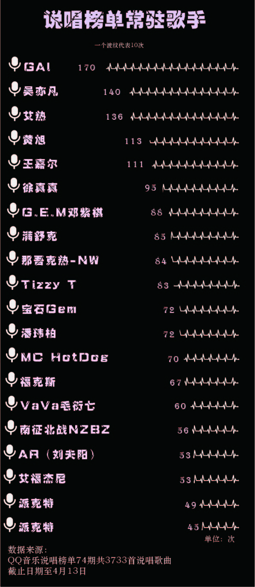
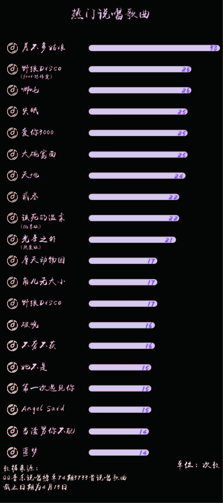
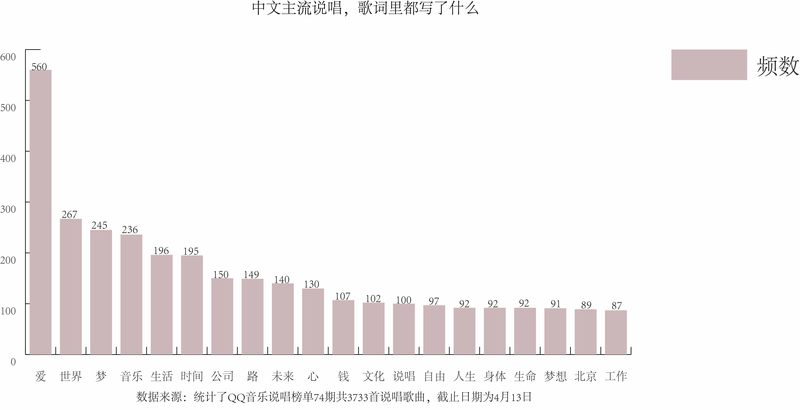

“淡黄的长裙，蓬松的头发”，你可能不关注选秀，但你很有可能听过这句梗。
这句出自选秀节目《青春有你2》的 Rap 歌词，因为成员朗读式的演绎方式成功地火出了圈。说唱圈的职业 Rapper 纷纷出战挑战这首歌，饭圈和说唱圈的一次混搭，制造出了互联网的一场狂欢。
上次萦绕在我们耳边的魔性 Rap，还是《野狼disco》中的“左边跟我一起画个龙，在你右边，画一道彩虹”，以及吴亦凡带火的“你看这面又长又宽，就像这碗又大又圆”。如今，说唱早已不仅局限于“地下”，在几档说唱类综艺的推动下，为大家所熟知。
中国的说唱圈，谁比较火？
很多人可能不太清楚说唱和嘻哈之间的关系，说唱，也就是我们常说的 Rap，其实是嘻哈文化的一种。除了说唱，嘻哈文化还包括街舞、DJ 和涂鸦这三大要素，是典型的街头文化。
华语音乐早就有很多说唱的元素，但是纯正的说唱，在国内一直处于边缘、小众的地位。
而2017年的网络综艺节目《中国有嘻哈》，火爆了当年整个暑假的同时，还带火了“diss”“freestyle”等词，也让一群说唱歌手从“地下”走到了“地上”。为了搞清中文“主流”说唱的基本面貌，数读菌在QQ音乐的说唱榜单中爬取了74期共3733首歌曲，统计了出现在榜单中次数最多的歌手。
结果显示，目前在华语音乐圈中最火的一群说唱歌手，很大一部分都参加过《中国有嘻哈》、《中国新说唱》。霸榜次数最多的歌手是GAI周延，他在《中国有嘻哈》中夺得冠军。而节目的另一位冠军PG One，被爆出和李小璐的丑闻，后被官媒点名歌词低俗、教唆未成年人吸毒、侮辱妇女，如今已消失在主流的说唱圈中。
其余歌手，例如艾热、黄旭、徐真真、满舒克、那吾克热等都先后参加过《中国有嘻哈》《中国新说唱》。而吴亦凡、邓紫棋、潘玮柏、MC HotDog，也都担任过这两档节目的导师。
榜单前二十中的另一位女歌手VaVa毛衍七，也是出名于《中国有嘻哈》，是大家为数不多能叫的上号的说唱女歌手。另一位上榜的女歌手邓紫棋，不只有一首《泡沫》拿得出手，她的歌曲曲风多样，抒情慢歌、流行摇滚均有涉及。而她在《中国新说唱》为完成任务，将 MC HotDog 的《差不多先生》改编成的《差不多姑娘》，在截至4月13日共74期的榜单中霸榜出现次数最多。
除此之外，《野狼Disco》这首火爆全网的神曲热度也可想而知的高，在74期的榜单中，如果加上和陈伟霆合作的版本，这首歌出现了43次，比《差不多姑娘》还要多。这首被认为是烂大街的夜店土嗨神曲，“惊呆了”乐评人耳帝，让他“莫名感动”，他评价这首歌是“东北蒸汽波，中式 County-pop”，“幽默里裹挟着失落，市井中点缀着浪漫，粗俗里散发着想象”。Gai周延近期的代表作《哪吒》，是首和大痒痒为电影《哪吒之魔童降世》联合创作并演唱的国风说唱，也可以看出Gai的转型之路，从江湖气浓厚的匪帮说唱转变到如今融入方言、中国风特色的“新华派说唱”。从野蛮生长的地下状态，到如今迎合华语流行、大众圈层，脱离地下圈层的中国嘻哈音乐，和我们想象中“嘻哈”已经大不一样。
说唱歌曲中最喜欢用的语气助词
歌词不够语气来凑，学习说唱第一步，先学会用“yeah”“oh”“ya”这些词来补充自信，想要当rapper，在气势上就不能输。
数据来源：统计了QQ音乐说唱榜单74期共3733首说唱歌曲，截止时间为4月13日
将分词中的名词作统计，可以发现和大家对嘻哈的印象不太一样，跻身主流的Rapper们，歌词都很“peace&love”，充满世界和爱的关怀。
